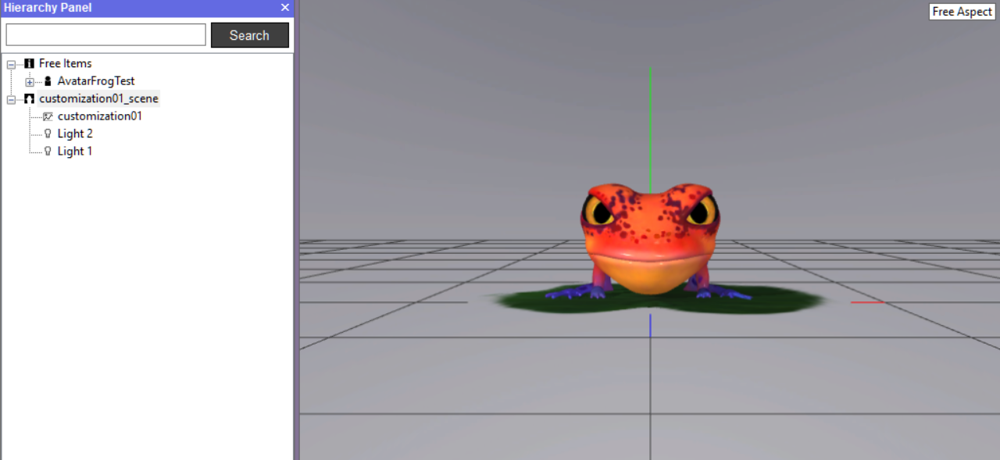
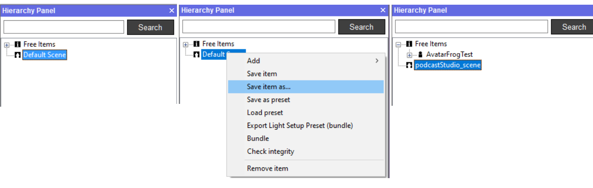
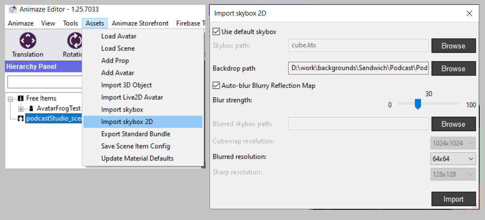
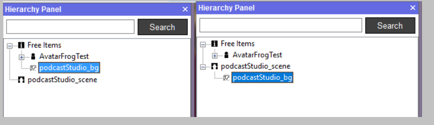
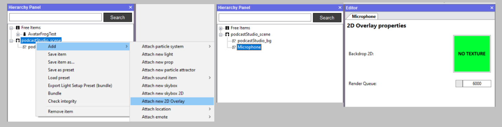
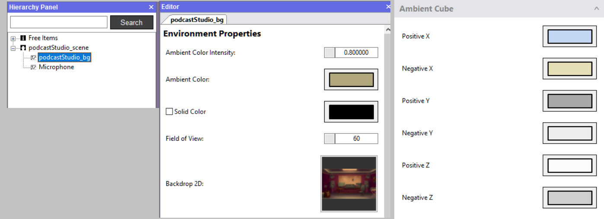
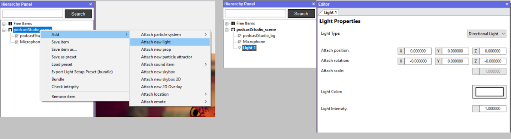
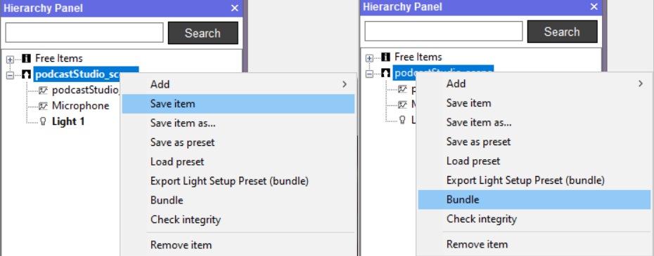

オーバーレイを含むシンプルなスタティックの2D背景の作成方法。
基本背景画像。
手順1：SteamからAnimazeエディターを開きます。
-
「Steam」 > 「ライブラリ」の順にクリックします
-
ゲームリストの一番上にドロップダウンリストがあります（通常は「ゲーム」に設定されています）
-
ドロップダウンリストをクリックしてツールを選択します
-
左側のリストをスクロールし、Animazeエディターをクリックします
-
他のSteamのタイトルと同じ方法で起動します。
デフォルトでは、読み込んだシーンを「customization01_scene」、アバターを「AvatarFrogTest」と呼びます。

Animazeエディターには常に、読み込んだシーンアイテムが1つだけ表示されます。このシーンは、情報に関連する全ての背景を含む大量のデータを保存する場所として機能します。
このシーンが、作業終了後にAnimazeアプリにエクスポートするものです。
手順2：現在のシーンを削除します。
階層パネルでcustomization01_sceneのアイテムを右クリックし、右クリックメニューから「アイテムを取り除く」を選択してください。これでシーンはリセットされ、後でバンドルやエクスポートを行うことのできる新たなシーンを構築できるようになります（customization01_sceneはデフォルトではバンドルやエクスポートができません。そのため、削除の必要があります）。

DefaultSceneが削除されたシーンを自動的に置き換えます。これで白紙の状態となります。
ここで、新しいシーンの名前を変更して保存するとよいでしょう。保存するには、DefaultSceneのアイテムを右クリックし、「アイテムの保存形式」を選択して、名前を付けてください（このチュートリアルでは、podcastStudio_sceneという名前を付けます）。
手順3：Scene01のシーンで背景2D画像を読み込みます。

アセットのトップメニュー > スカイボックス2Dをインポートの順にクリックします。表示されるインポートウィンドウで、以下を入力してください：
- あなたのシンプルバックドロップ2D画像 > 「バックドロップパス」フィールドへ。シンプルな2D背景を作成したい場合、これが最も重要な入力フィールドとなります。反射キューブを気にしない場合、他の全てのフィールドはあまり重要になりません。
- スカイボックスHDRテクスチャーは、バックドロップの反射キューブ・マッピングを作成するキューブとして機能させるために「スカイボックスパス」の中にある必要があります。このような用語に詳しくない場合、反射キューブ・マッピングをあまり気にする必要はありません。「デフォルトのスカイボックスを使用」にチェックを入れてこの手順をスキップすれば、背景は一般的な反射マッピングを使用します。
- カスタムぼかし反射マッピングHDRソースを指定したくない場合、「自動ぼかし反射マッピング」をチェックすることもできます。指定したい場合は、「ぼかしスカイボックスパス」フィールドから指定できます。
- キューブの解像度に関するその他3つのフィールドは、デフォルト値のままで大丈夫です（反射キューブのサイズに詳しく、デフォルトでない設定にする理由が明確な場合を除く）。
「インポート」ボタンを押すと、階層パネルに、背景画像を参照する「2Dバックドロップ」タイプのオブジェクトが新たに作成されます。これは「フリーアイテム」の下に表示され、名前は2D画像のファイル名がコピーされます。
シーンカテゴリ（podcastStudio_scene）内の「フリーアイテム」から、この「2Dバックドロップ」タイプのオブジェクトをドラッグ＆ドロップしてください。

オプション：オーバーレイ画像の読み込み。
バックドロップが読み込まれました。ここで、オーバーレイ画像（透明度あり）も読み込むことができます。
ナビゲーション。

-
シーンを右クリック > 追加 > 新たな2Dオーバーレイを添付
-
適切な名前を入力し（ここでは「Microphone」）、「OK」をクリック
-
階層から「Microphone」のアイテムを選択
-
右側のエディターパネルの「No Texture」と書かれた四角をクリック
-
必要な2Dファイルを選択
-
「OK」を押す
ライト値の設定
背景に3Dモデルを使用する場合、適切なダイナミックライトのセットアップも必要になるでしょう。主に2Dのアセットを使用する場合は、ライトについてはあまり気にしなくても大丈夫です。
Animazeの主なライトの設定は次の通りです
-
アンビエントライトの情報：
-
アンビエントライトの色全般、
-
アンビエント色強度全般
-
6色のライト（シーンの周りを囲む想像上の無限サイズのキューブの6方向から放射線状に広がる）
-
最大4つのダイナミックなライト（1つは指向性ライト、残りの3つはオムニライトもしくはスポットライト）
背景にこのようなライト設定を作成する必要があります。
インポートした背景オブジェクトを左クリックします。
エディターの右側にウィンドウが開きます。ここで、アンビエント色、アンビエント色強度、6つのアンビエントキューブライトを設定できます。

アンビエントライトを設定後、指向性ダイナミックライトの設定をしてください。
シーンの名前（Scene01）を右クリックし、「新しいライトを添付」をクリックします。新しいライトは、Scene01のオブジェクトのサブオブジェクトとして階層パネル内に表示されます。これを選択します。選択すると、エディターの右側にタブが開きます。ここでライトのプロパティの設定ができます。

特殊効果のために残して置きたい場合、ダイナミックライトは2つ以上設定しないことを推奨します（Animazeでサポートしているダイナミックライトの最大数は4つです）。

作業を保存
戻ってきて背景を編集できるようにするには、Animazeエディターのリソースフォルダーに保存しておくとよいでしょう。
保存するには、シーンを右クリックし、「アイテムを保存」を選択します。作成したシーンは、Animazeエディターのインストールフォルダーのリソース・サブフォルダーに保存されます。